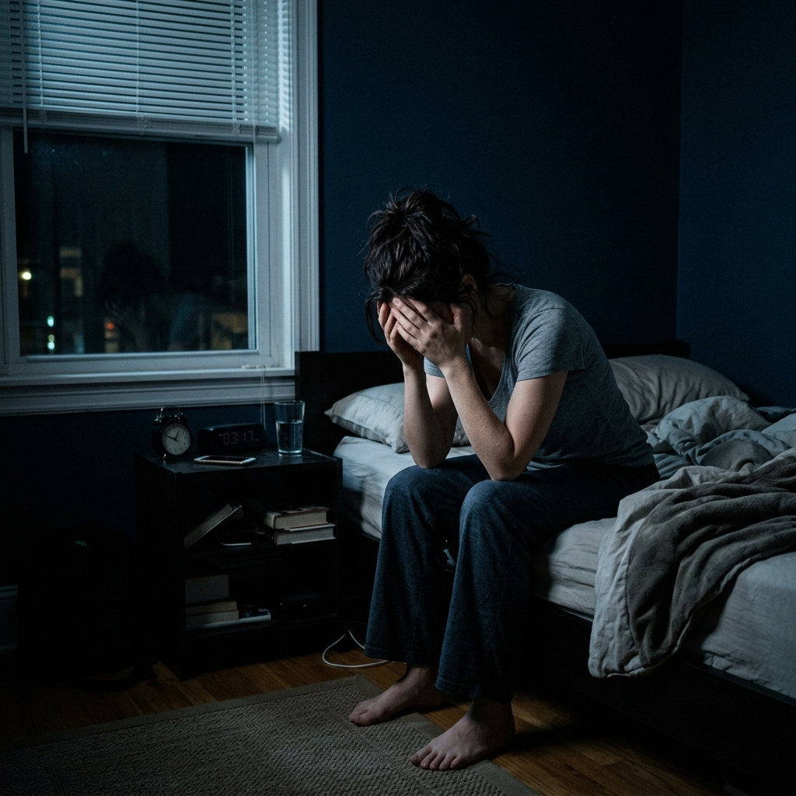

The Real Reason You Wake Up Exhausted (And Why Your Brain Won't Switch Off)
If you struggle with 3 AM wakeups, light sleep, or morning fatigue, there is a biological explanation for what you're experiencing.
Author's Note: The following explores biological factors related to sleep and discusses a popular method many are using to support their natural sleep cycles. This is not intended as medical advice.
You wake up tired... again.
Another night spent staring at the ceiling. You dread going to bed because you know exactly what’s coming: the tossing, the turning, the racing mind, and the inevitable morning exhaustion.
By the time the afternoon hits, you find yourself reaching for another cup of coffee just to keep your eyes open.
If this sounds like you, there’s a short presentation that helped me understand what’s really going on.
👉 Watch the 2-minute explanation of why your brain won’t switch off at nightWhy Do You Keep Waking Up at 3 AM?
If you find yourself opening your eyes at exactly 3:00 AM, you are not alone, and you are not broken. In behavioral sleep science, this is incredibly common and often points to a specific issue: cortisol imbalance.
Cortisol is your stress hormone. Normally, your cortisol levels drop at night to let you sleep, and naturally rise in the morning to wake you up. However, chronic stress, erratic schedules, and blue light exposure can disrupt this cycle.
When your body is holding onto stress, your brain sometimes spikes cortisol in the middle of the night. This sudden surge jolts you awake, often accompanied by a racing heartbeat and anxious thoughts. Your circadian rhythm gets confused, thinking it's time to wake up and solve problems.
Before turning to sleep supplements, experts typically recommend a few foundational habits:
- Lowering evening temperature: Keep your room cool (around 65°F) to signal your body it's time to rest.
- The 3-2-1 rule: Stop eating 3 hours before bed, stop working 2 hours before bed, and turn off screens 1 hour before bed.
- Morning sunlight: Getting 10 minutes of sunlight in your eyes right after waking up helps reset your natural rhythm.

Mark's Experience with Interrupted Sleep
This is exactly the pattern Mark, a 48-year-old office worker, found himself caught in. For the last few years, he experienced an exhausting battle with light, interrupted sleep and persistent morning fatigue.
He tried standard approaches. He bought an expensive weighted blanket, tried chamomile tea, and even experimented with different mattresses.
While some things helped temporarily, the 3 AM wakeups always seemed to creep back. He felt constantly frustrated, especially since his racing thoughts at night would carry over into exhaustion during the day.
Then, he decided to look into something different.
A colleague mentioned an approach that supports natural sleep cycles rather than forcing the body to shut down. Mark admits he didn't expect much at first—he had grown skeptical of any "sleep hacks."
Supporting the Body's Natural Sleep Cycle
Here is what often goes unnoticed with standard sleep aids.
Taking a standard melatonin pill might cause drowsiness, but it doesn't always address the underlying restlessness. Many traditional methods simply try to force the brain into submission without easing the tension it carries.
Instead of relying on harsh solutions, Mark tried a simple sleep-support method designed to encourage the body's natural transition into rest.
Think of it like landing an airplane. You can't just drop from 30,000 feet straight to the runway; you need a gradual, controlled descent. This simple approach focuses on supporting that gentle "descent" for your mind.
Struggling With Sleep?
Find Your Evening Calm with Yu Sleep
Yu Sleep helps you wind down naturally and supports a calmer nighttime routine.
★ ★ ★ ★ ★
Trusted by 100,000+ people improving their sleep.
What Users Are Reporting
While individual results always vary, people who focus on supporting their natural rest cycles often report:
- A calmer mind when getting into bed
- Falling asleep more smoothly without as much tossing and turning
- Some users report fewer 3 AM disruptions
- Feeling a bit more refreshed and clear-headed in the morning
- Finding it easier to go back to sleep if they happen to wake up
A Balanced Approach to Sleep
It's important to keep expectations realistic. There is no magic switch that instantly cures years of poor sleep habits. Developing a reliable sleep routine takes time, and this simple sleep-support method is meant to be one supportive tool alongside good sleep hygiene—not a miracle cure.
However, thousands of adults struggling with overthinking at night are exploring this simple nightly routine as a way to support their overall wellness.
Final Thoughts On This Routine
If you’re tired of relying on methods that leave you feeling groggy, this approach might be worth considering.
There is a short, informative presentation that explains the science behind this method and introduces a natural sleep support solution called Yu Sleep. It simply requires a brief moment of your time to see if it aligns with your lifestyle.
Watch the short video below to learn more about this natural sleep-support method.
The insights in this video may help you understand your sleep patterns better.
👉 Watch the 2-minute explanation of why your brain won’t switch off at night